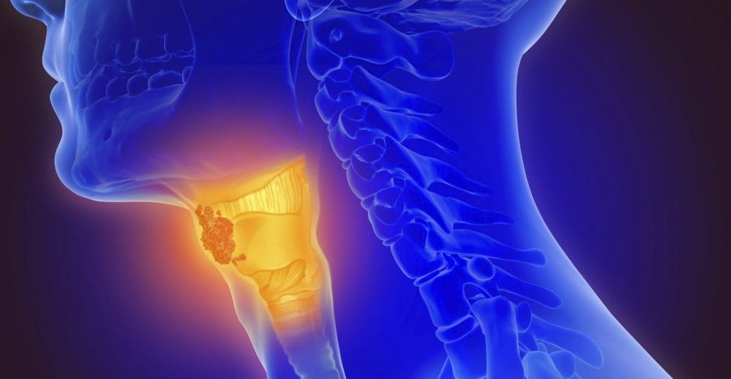
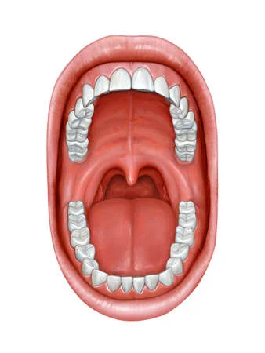
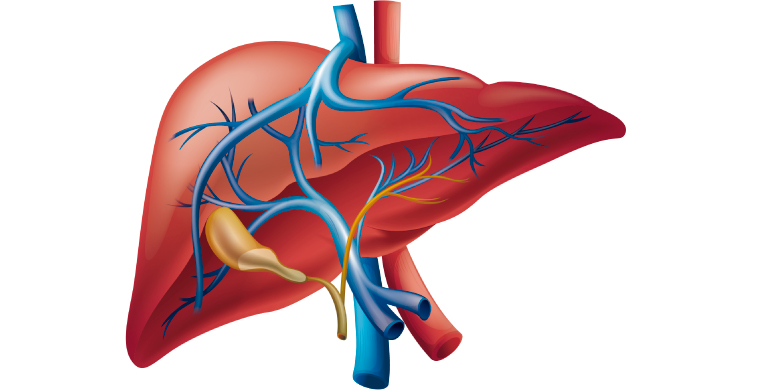
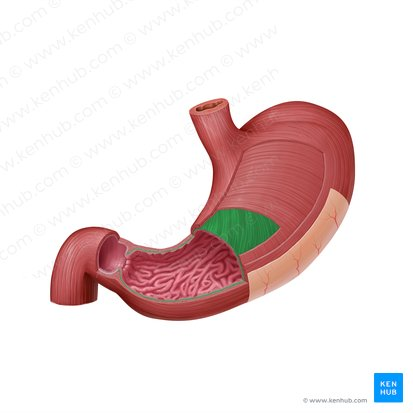
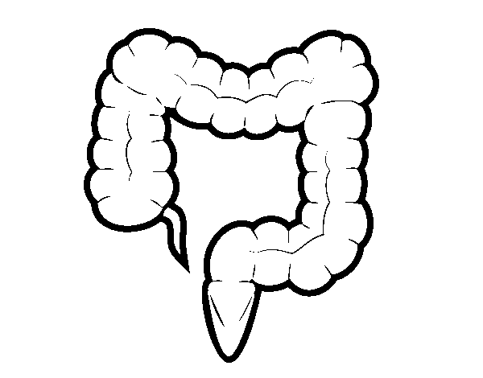
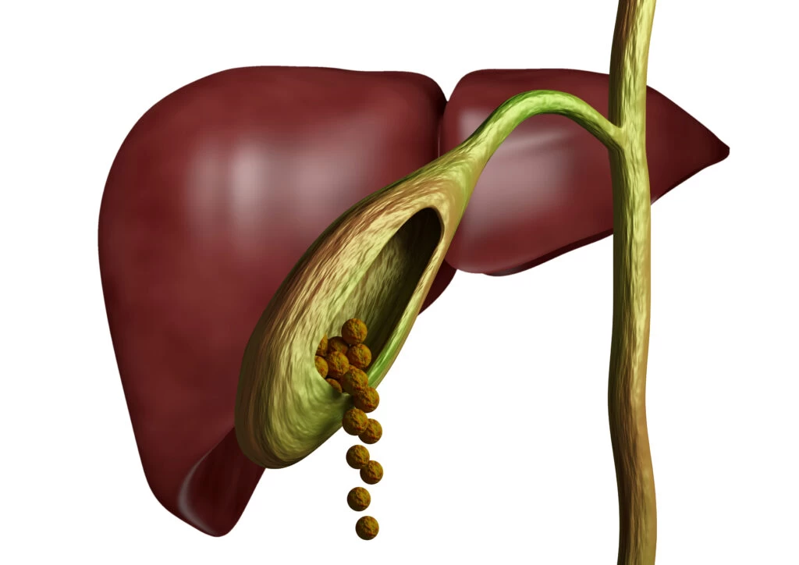

¡Hola! ¿ cómo están? Como vimos en estas dos primeras clases, los seres humanos somos organismos complejos y abiertos que intercambiamos materia y energía con el entorno constantemente y posee todos los niveles de organización ( celular, tejidos, órganos y sistema de órganos). Una de las funciones del cuerpo humano es la de nutrición, en ella se incluye, ademas del sistema respiratorio, circulatorio y excretor, el sistema que estamos viendo, " el sistema digestivo". Luego de revisar los diferentes órganos que componen al sistema, tendrán que realizar las siguientes actividades:
1. Realizar un visionado del video, atendiendo a la siguiente pregunta: ¿Es correcta o completa la representación del sistema digestivo en el video?¿Por qué? Redacten un texto explicándolo.
2.Completar el siguiente cuadro:
| ¿Quién lo produce? | ¿Dónde es volcado? | ¿Qué función tiene? | |
|---|---|---|---|
| Saliva | |||
| Bilis | |||
| Jugo pancreático | |||
| Jugo gástrico | |||
| Jugo intestinal |
3. Definir y especificar dónde se forman : el bolo alimenticio, el quimo y el quilo.
4. Identificar las estructuras que se presentan a continuación ( copiar los nombres en la carpeta, no es necesario esquematizar).
A
B
C
D
E
F

G
| Columna A | Columna B |
|---|---|
| 1. Intestino delgado | A. Órgano encargado de continuar con la disgregación de los alimentos y formar el quimo. |
| 2. Páncreas | B. Glándula que produce jugo pancreático y que ayuda en la formación del quilo. |
| 3. Estómago | C. Estructura encargada de la etapa de la absorción de los nutrientes. |
| 4. Recto | D. Estructura encargada de la elaboración de los desechos en el proceso de egestión. |
| 5. Hígado | E. Glándula que produce Bilis y ayuda en la formación del quilo. |
| 6. Glandulas salivales | F. Glándula que produce saliva para ayudar a formar el bolo alimenticio. |
| 7. Intestino grueso | G. Lugar donde se almacenan las heces fecales por un corto tiempo hasta que sean eliminadas por el ano. |
| 8. Boca | H. Estructura donde ingresa el alimento y se forma el bolo alimenticio. |
| 9. Esófago | I. Conducto encargado de transportar el bolo alimenticio desde la boca hacia el estómago. |
| 10. Ano | J. Esfínter que marca el fin del tubo digestivo y se encarga de la eliminación de las heces fecales. |